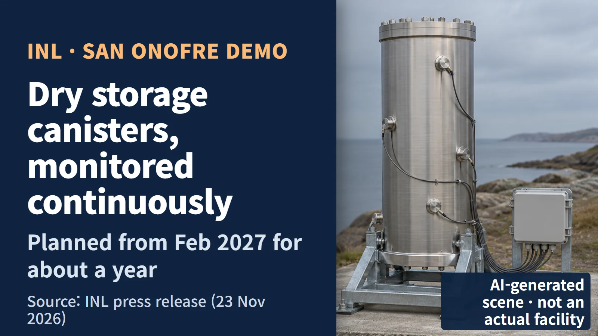
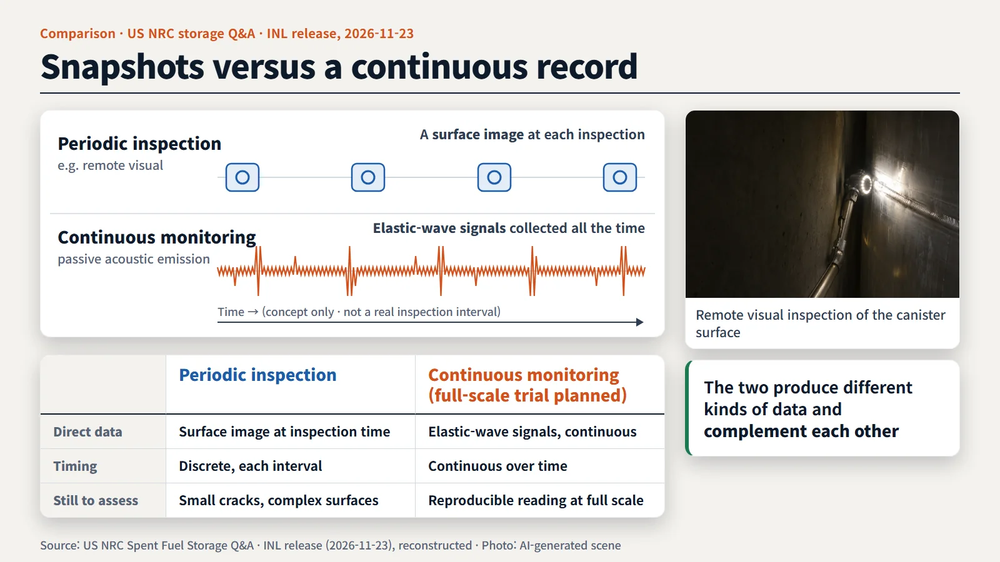
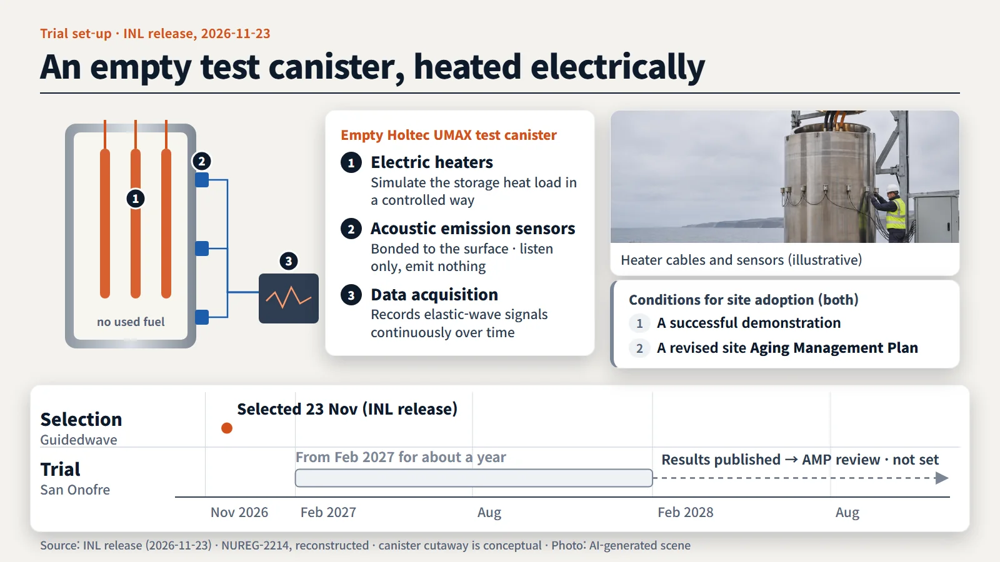

Fuel Cycle · Dry-Cask Storage
Monitoring dry-storage canisters: a planned full-scale trial and conditions for site adoption
San Onofre, about one year from February 2027 — a full-scale demonstration of passive acoustic emission monitoring
Anyone who has toured a nuclear plant has probably seen rows of thick metal canisters sitting on a concrete pad outside the reactor buildings. Inside each one is used nuclear fuel taken from the reactor, slowly giving off its remaining decay heat over years and decades. A natural question follows: if these canisters sit there that long, how do people check what is happening inside? Periodic inspections bring specialist equipment to the site. Remote camera examination of the outer shell is one example. The U.S. Department of Energy has now decided to test, for the first time at full scale, whether continuous listen-only sensing can add a second layer of information alongside those periodic inspections. This post walks through what was selected, what the test is set up to show, and what has to happen before an operating site can use the technology.

Why this monitoring technology was picked for a full-scale trial
On 23 November 2026, the U.S. Department of Energy's Center for Used Fuel Research announced that it had selected Guidedwave as the performer for a full-scale demonstration of automated monitoring of used-fuel canisters. The selection follows an earlier laboratory-scale phase run through Idaho National Laboratory (INL). The two phases answer different questions. The laboratory phase studies, under tightly controlled conditions, how the canister material and the sensors behave. The full-scale phase asks whether those same sensors produce stable, interpretable signals at the size and thermal conditions of a real storage canister.
The demonstration is planned to begin in February 2027 at the San Onofre nuclear plant site in California, and to run for about one year. In other words, this decision is the starting point for the first full-scale field trial of passive acoustic emission monitoring on a dry-storage canister. The goal of this stage is to assess whether remote continuous monitoring can work under conditions that resemble those of an operating site. Site-level adoption decisions come later, after the trial data are in and reviewed.
A short note on wording helps here. The sensing approach being tested is called passive acoustic emission. The word passive has a specific meaning in nondestructive sensing: the sensors do not emit a probing signal. They receive the elastic waves that sudden internal deformation of the material produces on its own. When a crack forms or grows, the material itself releases a tiny burst of elastic energy, and surface-mounted sensors convert that burst into an electrical signal. The U.S. National Bureau of Standards (now NIST) laid out this physical picture in a 1984 reference on acoustic-emission fundamentals.
How periodic inspection and continuous monitoring differ
Placing the trial in context means seeing clearly how the two approaches differ in the information they produce. Dry-storage canisters undergo periodic field inspections. During remote visual inspection, specialist equipment examines the outer surface with cameras. The U.S. Nuclear Regulatory Commission (NRC) notes in its public Q&A on dry-cask storage that readings from visual inspection depend on the size of any crack and the condition of the surrounding surface. In plain terms, periodic visual inspection delivers a snapshot of the outer surface at the time of the inspection, from the camera angles that are accessible.
Passive acoustic emission monitoring has a different signature. Sensors are attached to the canister surface in advance, and elastic-wave signals generated inside the material are collected continuously along the time axis. The result is a time series of structural-condition signals that can be examined for trends.
Compared on the same criteria, the two approaches line up like this:
| Criterion | Periodic inspection (remote visual example) | Passive acoustic emission monitoring (full-scale trial planned) |
|---|---|---|
| Direct information | Outer-surface image at the time of inspection | Elastic-wave signals collected continuously |
| Timing | Discrete, each scheduled interval | Continuous over time |
| Point still to assess | Readability for small cracks or complex surface conditions | How reproducibly the signals can be interpreted at full scale |
(Source: US NRC, Spent Fuel Storage in Pools and Dry Casks – Q&A; INL press release, 23 November 2026, reconstructed.)
So what shifts in practice. Because the two approaches produce information of different kinds, the natural way to read this selection is as two complementary layers: periodic visual inspection records the outer surface at specific moments, and continuous listen-only sensing records changes along the time axis for the same canister. How reproducibly that continuous signal can be interpreted under real site conditions is exactly what the full-scale trial is set up to study.

What the heated empty test canister is set up to show
The part most easily misread is the test article itself. The article being monitored is an empty Holtec UMAX test canister with no used nuclear fuel inside, and electric heaters installed inside the canister simulate the thermal load a loaded canister would present. INL describes the setup throughout as a test article for demonstration purposes.

Why heat an empty canister electrically? Two reasons fit together. First, a real loaded canister produces a continuing thermal load from radioactive decay inside the fuel. The signals that surface sensors receive depend on the thermal and environmental conditions around the material as well as on the material itself, so building a reference for signal interpretation requires reproducing a comparable thermal state. Electric heaters are a controlled way to simulate that load. Second, during a demonstration phase the sensor layout, wiring, and data-acquisition chain all have to be adjusted repeatedly, and an empty test article makes those adjustments practical.
What can this configuration answer? The data the trial builds up concern how the sensors behave in a near-field environment, how stable the collected signals are, and under what conditions similar signal patterns recur. Evaluation needs data that distinguish conditions under which a signal recurs from conditions under which some other cause produces a similar signal. Figures for defect detection probability in a loaded canister, or for long-term fuel behavior itself, remain for later work, and the announcement contains no such numbers. The question this trial is set up to answer is narrower: whether, under conditions that resemble a real storage site, this sensing approach can collect reproducible data worth building further programs on.
What has to happen before a site can adopt it
Site adoption is a conditional next step. INL's announcement states two conditions together: (1) a successful demonstration and (2) a revised Aging Management Plan (AMP) for that site. Both need to be satisfied before monitoring at a given site's canisters moves forward. The present trial is therefore best read as the first gate on the path to field use.
Aging management plans sit inside a wider NRC framework for long-term storage of used fuel. The reference document is NUREG-2214, "Managing Aging Processes In Storage (MAPS)," issued in July 2019. It lays out the degradation phenomena that can affect long-term safety functions in storage, together with examples of aging-management programs that are generally considered acceptable. Site operators use this guidance as a basis for drafting the aging-management plan that applies to their own facility and discussing it with the regulator.
One further detail is worth noting. Under NRC regulation, passive canister-monitoring devices are positioned as an optional tool that a site may adopt, rather than a uniform installation requirement. A site can incorporate them within the scope of a successful demonstration and a revised AMP. At federal consolidated storage facilities managing many canisters in one place, successful continuous monitoring is assessed as a way to reduce repeated deployment of specialist inspection equipment. Figures for cost reduction or inspection intervals will become meaningful once trial results and site-level operating choices are settled.
Viewed through NUREG-2214's framework, this trial sits at the stage of confirming at full scale the technical validity of a monitoring tool proposed for long-term storage conditions. The sequence that follows is clear: trial start in February 2027, about one year of data collection, publication of results, and site-by-site review for aging-management plan revisions. As those steps are completed, the scope of use at any given site becomes concrete. What this news adds, for now, is a path under which the next site decisions will have data they can actually lean on.